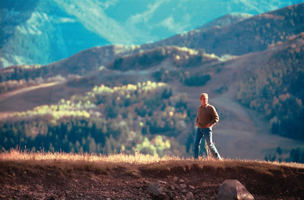

peter l. gould/images
Above: Robert Redford engages with filmmaker Andrew Dosunmu at the Sundance Institute. Top: May 1978—Redford gives a speech at the United Nations Plaza in New York to promote solar energy.